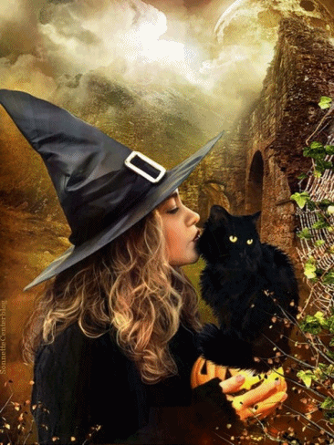

3 – Após ajudar aquela moça, Rowena se sentia tão viva que a briga com os pais se tornava pequena e a vontade de ir embora ou não perdoar os pais desapareciam e davam lugar a uma magia que ela nunca havia experimentado antes, a maldição havia sido quebrada. O que acha que Rowena gostaria de fazer agora?
a) Ir até a casa da irmã, pois lá ela pode encontrar bons conselhos e aprender poções, encantamentos e feitiços para retornar para casa em segurança, já que melhor professora que sua irmã não há!
b) Voltar para casa, mesmo que seja perigoso voltar e virar comida de Troll. Afinal ela não aprendeu nada até agora.